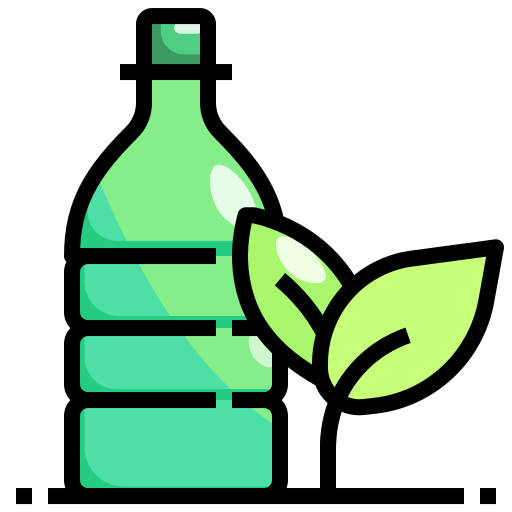
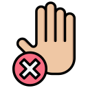

| R |
Descripción |
Ejemplo |
Imagen |
| Reducir |
Disminuir el consumo de recursos y energía. |
Usar bombillas LED, comprar productos a granel. |
 |
| Reutilizar |
Volver a usar productos en lugar de desecharlos. |
Usar frascos de vidrio, bolsas reutilizables. |
|
| Reciclar |
Transformar residuos en nuevos productos. |
Separar papel, plástico, vidrio y metal para reciclar. |
|
| Rechazar |
Negarse a consumir productos que dañen el ambiente. |
No usar plásticos de un solo uso, evitar empaques innecesarios. |
 |
| Reparar |
Arreglar objetos dañados en lugar de desecharlos. |
Reparar ropa, electrodomésticos o muebles. |
 |
| Renovar |
Dar un nuevo uso o aspecto a objetos antiguos. |
Hacer manualidades o decoraciones con materiales viejos. |
|
| Reincorporar |
Devolver materiales orgánicos a la naturaleza. |
Hacer composta con residuos de comida y jardín. |
|